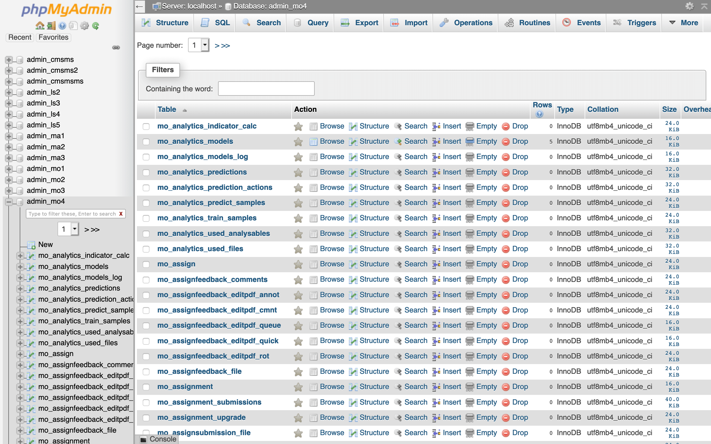
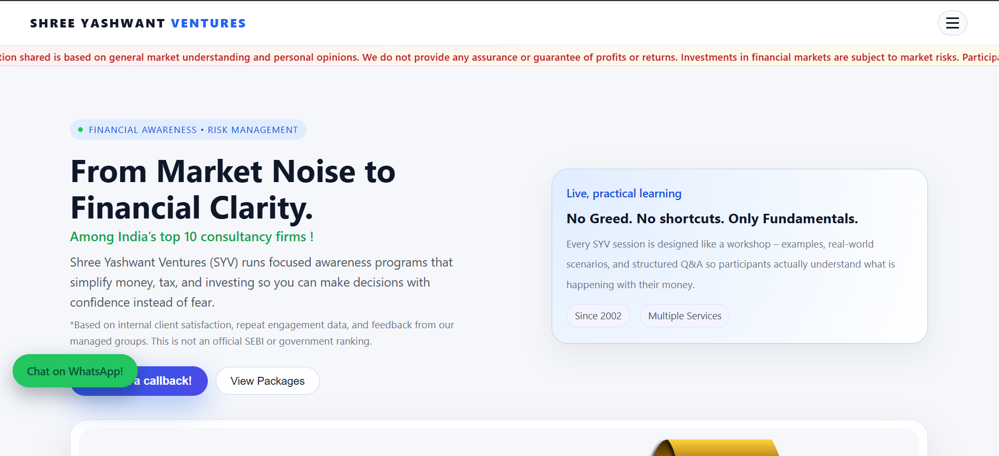
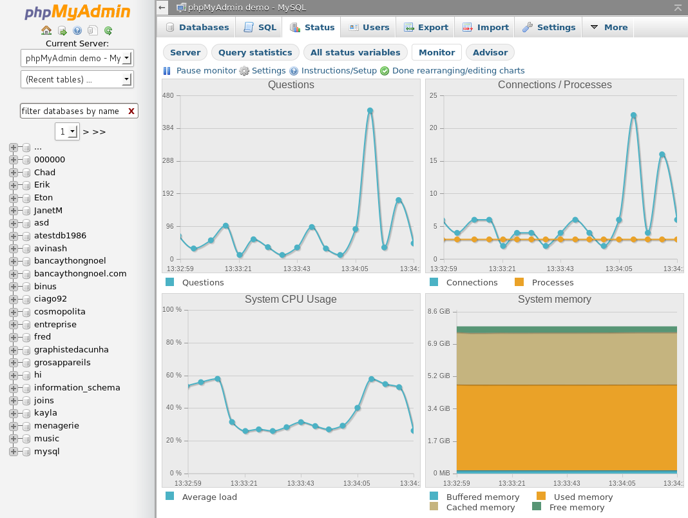

Frontend & SQL
Clean frontends
and reliable SQL backends.
I build lightweight frontends and design SQL databases that power dashboards, websites and reporting tools — bridging design, UX and data.
Frontend
Responsive websites & small web tools
I create simple, accessible frontends using HTML, CSS and JavaScript. I also build small interactive tools and prototypes that integrate with reporting and campaign UX flows.
HTML
CSS
JavaScript
Responsive Design
SQL & Backend
Database design and data pipelines
I design SQL schemas, build simple ETL flows and connect databases to dashboards so teams can rely on clean, queryable data for reporting and decision-making.
SQL
Database Design
ETL
Dashboard Integration
Selected work
Frontend + SQL Projects

